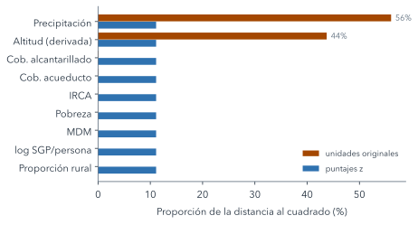

19 De la tabla a las características
Quarto, publicación reproducible, agentes de programación, Markdown, Python, EPUB, análisis de datos, k-means
Un algoritmo de agrupamiento no lee una tabla como lo hace una persona. Ve números, mide distancias entre filas y agrupa las filas que están cerca. Todo en el resultado depende de qué filas ve, qué números, en qué escala, y qué recibe donde falta un número. Preparar los datos es el nombre de esas decisiones, y le dan forma a los clústeres tanto como el algoritmo. Hay cuatro entre la tabla del agua y el agrupamiento, y cada una tiene un precio, que se cuenta en filas y en conjeturas.
- Explicar los cuatro pasos de la preparación y lo que cuesta cada uno.
- Calcular un puntaje z dentro de un año y decir qué significa +1.
- Explicar por qué la escala decide lo que pueden ver los clústeres, y por qué el peso igual es una elección.
- Revisar los conteos de
prepare(), y seguir a un municipio a lo largo de cada paso.
19.1 Cuatro pasos de la tabla a las características
1. Seleccionar. Conserva los años de 2016 a 2023, porque el índice de desempeño municipal (MDM), una de las características, empieza en 2016. Conserva solo los municipios: San Andrés no tiene ninguno de los valores del DNP y las áreas no municipalizadas están casi vacías. Conserva solo las filas con un valor de IRCA, ya que la calidad del agua es el punto del análisis. El IRCA es la única característica que nunca se llena: sus vacíos pueden depender del riesgo mismo (Sección 18.2), así que un puntaje llenado sería una conjetura justo sobre aquello de lo que trata el análisis.
2. Transformar. Las transferencias para agua por persona (SGP) son muy asimétricas: la mayoría son moderadas y unas pocas son muy grandes. Por eso el análisis usa su logaritmo, que mide razones y no diferencias: cada vez que una transferencia se duplica, suma lo mismo, y las pocas transferencias muy grandes ya no quedan lejos de todas las demás. Las capitales de departamento no tienen una separación urbana y rural para la cobertura, así que sus filas urbanas usan en su lugar la cobertura total del municipio, y una columna indicadora registra que lo hicieron. El total le sirve a la fila urbana porque la mayoría de la gente de una capital vive en su cabecera (el 88% en la capital mediana en 2023). No le serviría a la fila rural: en los demás municipios, el total supera a la cifra rural en el 86% de las zonas-año rurales, así que las filas rurales de las capitales se llenan en el paso siguiente.
3. Imputar, con indicadores. Imputar es llenar un valor faltante con una estimación. Descarta las filas a las que les faltan más de dos de las nueve características. Llena los vacíos restantes con la mediana del mismo año y la misma zona, y agrega una columna indicadora, como water_coverage_imputed, que marca cada valor llenado. La mediana, porque unos pocos valores extremos no pueden arrastrarla; el mismo año y la misma zona, porque las zonas rurales y urbanas difieren (Sección 18.2) y los años se desplazan.
4. Estandarizar dentro de cada año. Reemplaza cada característica por su puntaje z dentro de su año:
\[z = \frac{x - \bar{x}_{\text{año}}}{s_{\text{año}}}\]
donde \(x\) es el valor de la característica en una fila, y \(\bar{x}_{\text{año}}\) y \(s_{\text{año}}\) son la media y la desviación estándar de la característica en las filas conservadas de ese año. La desviación estándar es, más o menos, la distancia típica de un valor a la media, en la unidad propia de la característica. Un puntaje z de +1 significa una desviación estándar por encima del promedio de ese año; un puntaje z no tiene unidad.
¿Por qué dentro de cada año y no sobre todos los años? Por dos razones. El SGP está en pesos corrientes, no ajustados por inflación, así que sus valores suben con el tiempo por razones que no tienen que ver con ningún municipio. Y otras características se desplazan en bloque de un año a otro, como el IRCA rural en la Figura 18.2. Estandarizar dentro de cada año elimina los dos desplazamientos. Una zona se compara solo con las demás zonas de ese año, así que un desplazamiento nacional, real o producto del muestreo, no la cambia de clúster, y un solo agrupamiento sobre todos los años da etiquetas que significan la misma posición relativa en cada año. El precio es que una mejora real compartida por todas las zonas también es invisible para los clústeres.
Cada relleno es una conjetura, y una conjetura sin indicador se vuelve imposible de distinguir de los datos. Los indicadores hacen que las conjeturas se puedan contar y revisar después: un clúster hecho sobre todo de valores imputados sería un clúster de medianas, no de lugares. El README de los datos lo dice sobre la cobertura de las capitales (“Do not do it silently”: no lo hagas en silencio), y el AGENTS.md del proyecto, escrito a partir de ese README, le lleva sus advertencias al agente: nada se llena en silencio.
19.2 Lo que conservan los pasos
Cada decisión tiene un precio en filas (Tabla 19.1).
prepare() del proyecto terminado.
| Paso | Filas |
|---|---|
| filas de municipios, 2016–2023 | 17,648 |
| descartadas: sin IRCA | 6,411 |
| descartadas: les faltan más de dos características | 2 |
| conservadas: 7,534 urbanas y 3,701 rurales | 11,235 |
Las filas conservadas cubren 1,090 municipios. 653 filas tienen al menos un valor imputado, y 214 filas urbanas de capitales de departamento tomaron el total municipal para la cobertura.
Casi toda la pérdida es el primer descarte: las filas sin valor de IRCA, la mayoría de zonas rurales que nunca se muestrean o que no tienen prestador (Sección 18.2). Así que el clúster rural que aparece en el capítulo siguiente describe solo los sistemas rurales muestreados. Los valores imputados son valores de cobertura: las filas rurales de las capitales y los municipios a los que les falta la separación en algunos años.
Tunja muestra los dos tratamientos de una capital, y no pierde ninguna de sus 16 zonas-año de 2016 a 2023. Sus 8 filas urbanas tomaron el total municipal para la cobertura, marcado en water_coverage_from_total, y sus 8 filas rurales tomaron la mediana rural de su año, marcada en water_coverage_imputed. La revisión también encuentra algo que los indicadores no marcan: el total que tomó la fila urbana de 2021 es el 0 que la sección de Tunja (Sección 18.3) señaló como probablemente “no reportado”. El análisis lo conserva tal como se publicó, como hace el README de los datos. Tratar esos ceros como faltantes sería un cambio defendible, pero un cambio que hay que hacer en prepare() e informar, nunca en silencio.
Supón que prepare() tratara como faltante el 0 reportado de Tunja. ¿Qué le pasaría a esa fila, y a su puntaje z de cobertura?
Sin un total que tomar, la fila urbana de 2021 pasaría al paso 3 y se llenaría con la mediana urbana de ese año, marcada en water_coverage_imputed. Su puntaje z de cobertura pasaría de −1.9, muy por debajo del promedio del año, a más o menos +0.8, el de una cabecera común: un error sin marcar se volvería una conjetura marcada.
19.3 ¿Por qué cambiar la escala?
k-means agrupa las filas por la distancia en línea recta, o euclidiana: la raíz cuadrada de la suma de las diferencias al cuadrado en todas las características. La proporción de la distancia al cuadrado esperada, entre dos filas tomadas al azar, que aporta una característica es proporcional a su varianza, el cuadrado de su desviación estándar. En unidades originales, las características que se miden en miles, como los milímetros de lluvia y los metros de altitud, opacan a las que se miden de 0 a 100 (Figura 19.1).

Sin cambiar la escala, la precipitación y la altitud juntas formarían el 99.8% de la distancia, así que los clústeres serían zonas climáticas y las variables del agua casi no contarían. Después de los puntajes z, cada característica tiene varianza 1 y aporta la misma proporción, más o menos el 11%. El logaritmo del SGP también importa. En pesos originales, su varianza sería unas 3,100 veces la de la precipitación, así que dominaría incluso a la precipitación; después de los puntajes z, el logaritmo evita que unas pocas transferencias muy grandes queden lejos de todas las demás filas, y baja el puntaje z más grande de 7.3 a 4.3.
Dos filas reales muestran lo que cambia la escala (Tabla 19.2): las zonas urbanas de Tunja, en lo alto de los Andes, y de Cartagena, en la costa del Caribe, en 2023. Las dos son capitales, así que su cobertura es el total de cada municipio. En unidades originales, su diferencia de altitud forma el 98% de su distancia al cuadrado, y una brecha de 43 puntos en la cobertura de acueducto forma menos del 1%. En puntajes z, la cobertura cuenta un 16%, y la altitud sigue a la cabeza, con un 68%, porque la altura es donde más difieren de verdad las dos ciudades. Cambiar la escala no hace que todas las diferencias cuenten lo mismo; evita que las unidades decidan.
| Característica | Diferencia | Proporción, original | Proporción, z |
|---|---|---|---|
| IRCA | 0.0 | 0% | 0% |
| Cob. acueducto | 43.4 | <1% | 16% |
| Cob. alcantarillado | 41.7 | <1% | 8% |
| Pobreza | 7.9 | <1% | 2% |
| Proporción rural | 0.06 | <1% | 1% |
| Altitud (derivada) | 2,679 m | 98% | 68% |
| Precipitación | 416 mm | 2% | 2% |
| MDM | 0.5 | <1% | <1% |
| log SGP/persona | 0.39 | <1% | 3% |
Supón que la precipitación se registrara en metros en lugar de milímetros. ¿Qué le pasaría a su proporción de la distancia, sin cambiar la escala y después de los puntajes z?
Sin cambiar la escala, sus valores se achicarían mil veces y su varianza un millón de veces, así que su proporción casi desaparecería y la altitud dominaría sola. Después de los puntajes z no cambiaría nada: la unidad se cancela, porque un puntaje z divide una distancia a la media por la desviación estándar, las dos en la misma unidad.
El peso igual es en sí una elección, no un valor por defecto neutral. Nueve características en puntaje z cuentan lo mismo, así que las tres variables de calidad y cobertura del agua cuentan el 33% de la distancia y el contexto, el resto. Peso igual por característica tampoco es peso igual por idea: la cobertura de acueducto y la de alcantarillado están muy correlacionadas (r = 0.77 sobre las filas conservadas, donde el coeficiente de correlación r va de −1 a 1, y 1 significaría que suben juntas a lo largo de una línea recta), así que lo que comparten cuenta dos veces. Si la calidad del agua debiera pesar más, esa es una decisión que hay que tomar explícitamente e informar, no dejarla a las unidades en las que vinieron los datos.
19.4 Construir prepare()
Dos prompts escriben los cuatro pasos en el script del proyecto. El primero selecciona y transforma:
Lee data/README.md. Crea scripts/analysis.py con prepare(df): las filas con entity_type "municipality", 2016–2023, con irca; las características irca, water_coverage, sewer_coverage, ipm, rural_share, altitude_m, rainfall_mm, mdm, log(sgp_water_pc); llena la cobertura faltante de las filas "urban" con department_capital == 1 a partir de *_total, marcada en <col>_from_total. Ejecútalo.escribe scripts/analysis.py · uv run python scripts/analysis.py
Deberías verlo ejecutarse sin errores y, si informa un conteo, 11,237 filas: las filas de municipios de 2016–2023 que tienen un valor de IRCA, antes de descartar ninguna por características faltantes. department_capital, en la que se apoya este prompt, marca las 32 capitales de departamento. El script de construcción la escribe a partir de los códigos DIVIPOLA, donde cada capital lleva el número 001, salvo que la capital de Cundinamarca es Bogotá, así que 25001 (Agua de Dios) no es una: un detalle que el agente solo puede hacer bien si lee el README de los datos.
El segundo imputa y estandariza, y guarda el resultado:
En prepare(), descarta las filas a las que les faltan más de 2 características, llena el resto con la mediana de `year` × `zone` más indicadores <col>_imputed, y luego agrega z_<col> (puntaje z dentro de `year`) al lado de las columnas originales; conserva las claves, las variables de resultado y los indicadores. Guarda outputs/prepared.parquet, imprime las filas conservadas y descartadas en cada paso. Ejecútalo.edita prepare() · uv run python scripts/analysis.py
La versión del proyecto terminado de la imputación y el cambio de escala, un poco recortada, muestra el poco código que lleva cada decisión una vez que está clara:
n_missing = d[FEATURES].isna().sum(axis=1)
1d = d[n_missing <= MAX_MISSING].copy()
2medians = (d.groupby(["year", "zone"])[FEATURES]
.transform("median"))
for col in FEATURES:
3 d[f"{col}_imputed"] = d[col].isna().astype(int)
d[col] = d[col].fillna(medians[col])
4grp = d.groupby("year")[FEATURES]
z = ((d[FEATURES] - grp.transform("mean"))
/ grp.transform(lambda s: s.std(ddof=0)))- 1
-
MAX_MISSINGes 2, fijado una vez al comienzo del script; el último ejercicio del análisis del agua lo cambia. - 2
- La mediana de cada característica dentro del mismo año y la misma zona, alineada con cada fila.
- 3
- El indicador se escribe antes del relleno, así que registra exactamente qué valores faltaban.
- 4
- Medias y desviaciones estándar por año: los puntajes z dentro de cada año de la fórmula de arriba.
Resumen
- Qué filas, qué números, cómo se llenan los vacíos y en qué escala le dan forma a los clústeres tanto como el algoritmo.
- El precio más grande son las filas sin IRCA, así que los resultados rurales describen solo los sistemas muestreados.
- Cada relleno lleva un indicador, y aun así una revisión puede encontrar un valor que ningún indicador marca.
- Los puntajes z dentro de cada año ponen las características en una sola escala y eliminan los desplazamientos nacionales.
- Sin cambiar la escala, la precipitación y la altitud decidirían los clústeres; el peso igual es en sí una elección.
Lo que queda son 11,235 filas de nueve puntajes z cada una, demasiadas para que alguien las lea: el capítulo siguiente le pide a un algoritmo que las resuma en unos pocos tipos.
Lecturas adicionales
- scikit-learn, Preprocessing data: standardisation (consultado el 2026-11-12).
- scikit-learn, Imputation of missing values, incluidas las columnas indicadoras que marcan los valores imputados (consultado el 2026-11-12).
examples/water/scripts/analysis.py,prepare(), en el repositorio del taller: la función completa, con sus conteos.